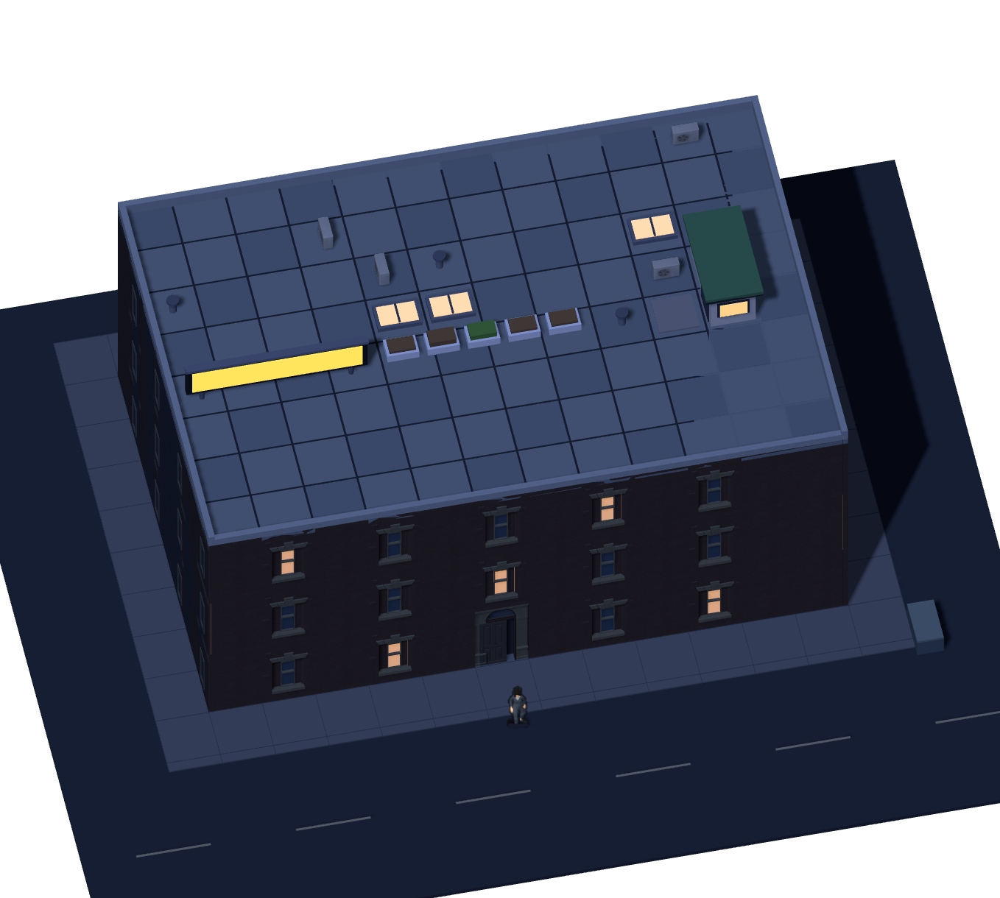
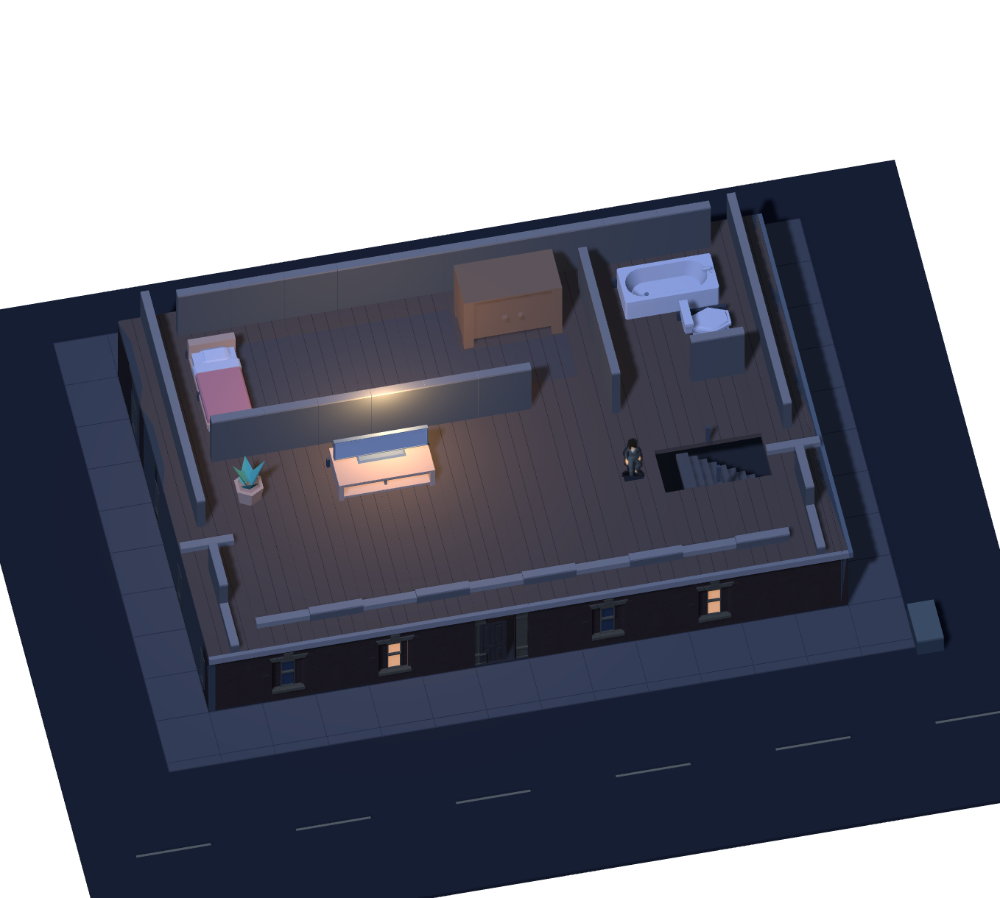

<!doctype html>
<html lang="ko"><meta charset="utf-8"><meta name="viewport" content="width=device-width,initial-scale=1"><title>야행 · 공간 시안</title>
<style>
*{box-sizing:border-box}body{margin:0;background:#101419;color:#e3e5e6;font-family:system-ui,-apple-system,"Noto Sans KR",sans-serif}main{max-width:1380px;margin:auto;padding:26px 32px}header{display:flex;align-items:center;justify-content:space-between;border-bottom:1px solid #343a40;padding-bottom:18px}h1{font-size:19px;letter-spacing:-.6px;margin:0;font-weight:600}a{color:#b4bcbf;text-decoration:none;font-size:13px}nav{display:flex;gap:6px;margin:22px 0 0}button{font:inherit;color:#acb4b9;background:transparent;border:1px solid #343e44;min-height:44px;padding:0 22px;cursor:pointer}button[aria-selected=true]{background:#d5dbc8;color:#1a201e;border-color:#d5dbc8}button:focus-visible,a:focus-visible{outline:2px solid #d6b880;outline-offset:4px}.scene{margin:0;background:#151b23;border:1px solid #333b43;display:grid;place-items:center;overflow:hidden}.scene img{width:100%;height:min(70vh,850px);object-fit:contain;display:block}figcaption{font-size:13px;color:#c0c8cb;padding:12px 16px}.compare{display:grid;grid-template-columns:repeat(3,1fr);gap:12px;margin-top:24px}.compare figure{margin:0;background:#151b23;border:1px solid #333b43}.compare img{width:100%;height:auto;display:block}footer{padding:22px 0 8px;color:#858e95;font-size:12px;line-height:1.8}footer a{font-size:12px}body.sheet main{max-width:none;padding:30px}body.sheet nav,body.sheet .scene,body.sheet footer,body.sheet header a{display:none}body.sheet .compare{margin-top:22px;gap:18px}body.sheet h1{font-size:24px}body.sheet figcaption{font-size:20px;padding:18px 22px}body.sheet .compare img{height:690px;object-fit:contain}
@media(max-width:650px){main{padding:20px 14px}header{gap:10px}h1{font-size:17px}nav button{padding:0 17px}.scene img{height:57vh}.compare{gap:6px;margin-top:14px}.compare figcaption{font-size:11px;padding:9px 5px}footer{font-size:11px}}
</style>
<main><header><h1>야행 · 공간 시안</h1><a href="https://kkhkkh20-bit.github.io/yahaeng/?v=83">게임 실행 ↗</a></header>
<nav role="tablist" aria-label="공간"><button role="tab" id="street" aria-selected="true" aria-controls="scene">거리</button><button role="tab" id="interior" aria-selected="false" aria-controls="scene" tabindex="-1">2층 실내</button><button role="tab" id="roof" aria-selected="false" aria-controls="scene" tabindex="-1">옥상</button></nav>
<figure class="scene" id="scene" role="tabpanel" aria-labelledby="street"></figure>
<section class="compare" aria-label="같은 건물의 세 공간 비교"><figure><figcaption>거리</figcaption></figure><figure><figcaption>2층 실내</figcaption></figure><figure><figcaption>옥상</figcaption></figure></section>
<footer>대청소 맵의 빌라 평면과 기존 무료 에셋으로 만든 시점 검토용 시안입니다. 게임 전체의 시점 변경은 적용 전입니다.<br>모델: Quaternius Downtown City MegaKit · Kenney Furniture Kit · Quaternius Ultimate Modular Women (CC0)</footer></main>
<script>
const tabs=[...document.querySelectorAll('[role=tab]')],view=document.querySelector('#view'),panel=document.querySelector('#scene'),alts={street:'거리에서 본 빌라. 세 층의 외벽과 지면에 선 주인공.',interior:'지붕과 윗층을 걷어낸 2층 실내. 계단 구멍, 벽 단면과 아래층 외벽이 보인다.',roof:'옥상 계단실 앞의 주인공. 난간 아래로 건물 세 층의 외벽이 이어진다.'};
function select(tab){tabs.forEach(t=>{t.setAttribute('aria-selected',String(t===tab));t.tabIndex=t===tab?0:-1});view.src=tab.id+'.png';view.alt=alts[tab.id];panel.setAttribute('aria-labelledby',tab.id)}
tabs.forEach((tab,i)=>{tab.onclick=()=>select(tab);tab.onkeydown=e=>{let n;if(e.key==='ArrowRight')n=(i+1)%tabs.length;else if(e.key==='ArrowLeft')n=(i+tabs.length-1)%tabs.length;else if(e.key==='Home')n=0;else if(e.key==='End')n=tabs.length-1;else return;e.preventDefault();select(tabs[n]);tabs[n].focus()}});
if(new URLSearchParams(location.search).has('sheet'))document.body.classList.add('sheet');
</script></html>
